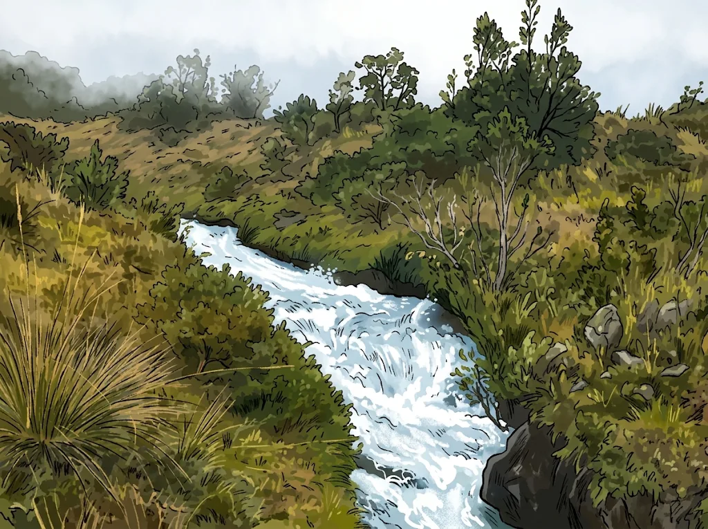
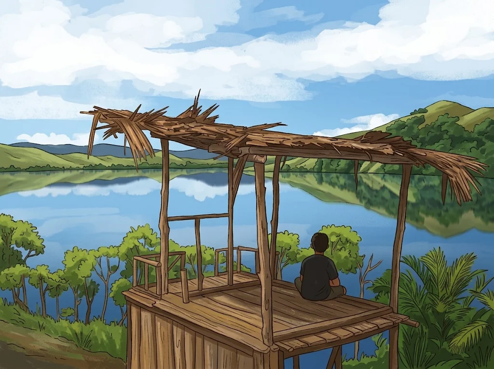

Inti
Kelas Keaksaraan Dasar
Belajar membaca, menulis, dan berhitung dengan metode ramah orang dewasa, di lingkungan sendiri.
Program Kerja
Belajar yang dekat dengan kehidupan sehari-hari, dari kelas keaksaraan hingga kemandirian ekonomi.
Program Kerja
Belajar membaca, menulis, dan berhitung dengan metode ramah orang dewasa, di lingkungan sendiri.

Membaca label, dokumen, dan mengelola keuangan keluarga serta literasi digital dasar.
Pendampingan usaha kecil—dari noken hingga hasil kebun—agar perempuan mandiri secara ekonomi.

Membekali pegiat literasi lokal dengan metode, modul, dan pendampingan berkelanjutan.